BR — Brazil
The main impact of a 200 basis-point (2.00 percentage-point) cut in United States interest rates on Brazil is a small positive spillover: GDP rises to a peak of about 0.05% above baseline by the eleventh quarter. This is a modest, slow-building gain rather than a large hit, consistent with Brazil’s classification in the minimal band. The shock is a US monetary easing, and the Brazilian response is transmitted mainly through external financial conditions and the exchange rate rather than through a direct domestic policy move.
Demand and trade respond in a muted but coherent way. Household consumption (Consumption) rises gradually to a peak of roughly 0.02% above baseline around the twelfth quarter, then fades and turns slightly negative by Q20. Private investment (Investment) is the strongest domestic demand component, peaking near 0.14% above baseline in the ninth quarter before fading and turning negative after Q16. Net exports (Net Exports, the trade balance — this model does not split imports from exports) fall to a trough of about −0.02% of GDP around the eighth quarter, then recover and turn positive from Q14 onward. Government spending (Gov Spending) dips modestly, with a trough near −0.01% around Q10, before recovering to slightly positive by Q20. Government debt (Gov Debt) drifts up gradually, peaking near 0.01% above baseline around Q17.
External and FX conditions are the clearest channel. The real exchange rate (Currency Strength) falls — that is, a real appreciation of the Brazilian currency — reaching a trough of about −0.48% versus baseline in the ninth quarter, before partially unwinding to roughly −0.05% by Q20. Because a decrease in the real exchange rate is a real appreciation, the home currency becomes stronger and less competitive, which is consistent with the negative net exports response over the first three years: the trade balance weakens as the currency appreciates, then improves as that appreciation fades.
Labour market effects are small but persistent. Employment rises to a peak of about 0.03% above baseline in the fifteenth quarter and remains positive through Q20. Unemployment falls, with a trough of about −0.01 percentage point around the thirteenth quarter, and stays below baseline throughout. Real wages initially dip, reaching a trough near −0.02% around Q10, then recover strongly and rise to about +0.03% above baseline by Q20.
Prices cool early and then firm. CPI inflation falls to a trough of about −0.01 percentage point in the second quarter, and the cumulative CPI effect over Q1–Q12 (CPI_3yr_pp) is −0.04 percentage points. Domestic inflation (Domestic Infl.) follows a similar path, troughing near −0.01 percentage point in Q2. Firms’ marginal cost (Marginal Cost) rises to a peak of about 0.03% above baseline in the eleventh quarter, then fades and turns slightly negative by Q19.
Financial conditions ease in the near term and tighten later. The local policy rate (Policy Rate) initially falls, troughing near −0.04 percentage point around Q4, then rises to a peak of about +0.05 percentage point by Q15. Government bond prices (Bond Price) rise to a peak of about 0.20% above baseline in the eighth quarter, then fall and turn negative from Q12. The equity index (Equity Index) peaks at about 0.38% above baseline in Q8, fades, and turns negative after Q16. Government yields move modestly: the 2-year yield (Govt 2Y Yield) peaks near +0.04 percentage point in Q12, the 5-year yield (Govt 5Y Yield) peaks near +0.01 percentage point in Q9, and the 10-year yield (Govt 10Y Yield) peaks near +0.01 percentage point in Q11. House prices (House Prices) rise steadily to a peak of about 0.04% above baseline in Q15 and remain positive through Q20. Bank credit (Bank Credit) expands only marginally, peaking near 0.0002% around Q16, while lending spreads (Credit Spread) are essentially unchanged at zero throughout.
Sectoral and capital effects are uneven. Manufacturing GDP (Manuf. GDP) is the strongest positive sectoral response, peaking at about 0.15% above baseline in the ninth quarter and remaining positive through Q20. Services GDP (Services GDP) rises more modestly, peaking near 0.03% above baseline in Q11 before fading and turning slightly negative by Q19. The capital stock (Capital Stock) edges up gradually, peaking near 0.01% above baseline around Q15. Tobin’s Q (Tobin's Q), the value of installed capital, peaks near 0.10% above baseline in Q9, then fades and turns negative after Q16.
On timing, the GDP gain is largest in Q11 at about 0.05% above baseline, and it has largely faded by Q18, turning slightly negative by Q19. The equity and bond-price effects peak earlier, around Q8, while the real appreciation troughs in Q9. Most of the positive impulse is gone by the end of the horizon, with several series slipping below baseline by Q20.
These are model impulse responses relative to baseline, not forecasts. They describe how Brazil’s macro variables deviate from their baseline path after a 200 basis-point US rate cut, given the model’s estimated transmission channels.
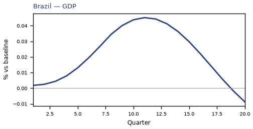
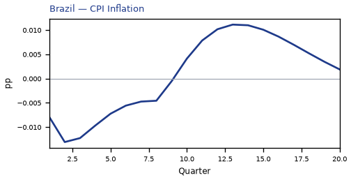
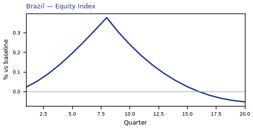
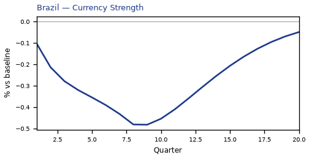
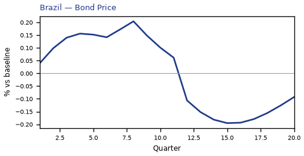
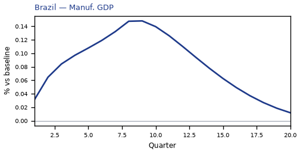
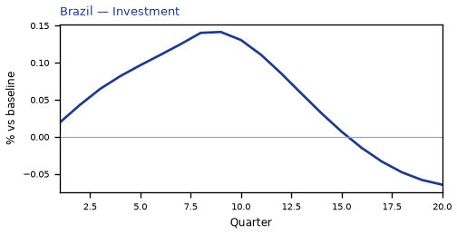
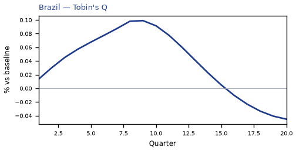

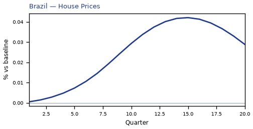
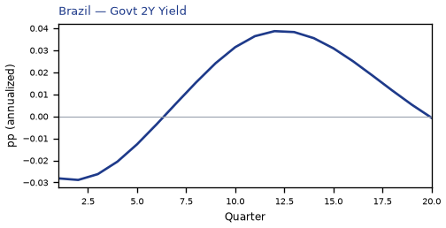
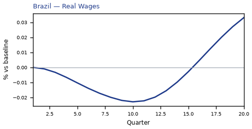
source=live · global_macro_v5 · contract v6 · Q1–Q20 JSON · not financial advice